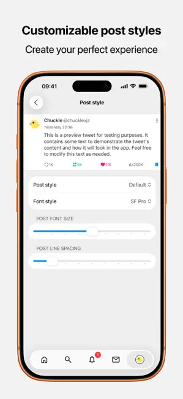

凌晨三点刷推文，我终于把官方X客户端卸了
一个折腾党从官方X逃到Chuckle的全过程：AI翻译、无广告时间线、高级搜索……这才是刷海外社交该有的样子。
凌晨三点，项目deadline的前一晚。我盯着VS Code里报错的TypeScript，脑袋嗡嗡的，想刷五分钟X放松一下——结果打开官方X客户端，先跳出来三条赞助广告，翻两屏又嵌了一条推荐关注，加载速度比蜗牛爬还慢。
我咬着牙点进一个技术博主的推文，全是日语。官方客户端自带的翻译功能我已经不想吐槽了，语序乱得像谷歌翻译十年前的水平，有时候直接把关键词翻错。复制到浏览器里用DeepL，再切回来，时间线已经刷新过一轮，刚才那条推文不知道飘哪去了。
这就是我每天的日常：想刷一下海外技术圈，官方X客户端的广告、翻译、加载速度，三件事轮流折磨人。我试过不下七八个第三方X客户端，要么界面丑得像Windows 95，要么用两天就崩，要么订阅价格比X Premium还贵。
那天我在一个开发者群里吐槽，有个老哥甩了一句："你试试Chuckle，我用了快两个月，没开过官方X了。"
我本来已经没抱什么期望——每次尝试新客户端都是踩坑。但凌晨三点的深夜里，deadline的压力、广告的烦躁、翻译的憋屈，三重叠加之下，我还是搜了一下，找到了Chuckle官网。安装包从官方下载拿，装好整个过程不到两分钟，它甚至不需要我额外配置网络——这点和群里老哥说的一样，装好就能直接用。
登录的那一刻，我心里咯噔了一下。Chuckle没有自己的账号体系，登录用的就是你已经有的X账号。手机号或者邮箱登进去，拉取的就是你原来关注列表里那堆博主的时间线、收藏、私信。它不存你的密码，所有操作都是走X的官方接口——这点让我稍微安心了一点，毕竟前前后后踩过好几个"第三方客户端收集账号数据"的坑。
时间线刷出来的瞬间，我愣住了。
干净。没有赞助广告，没有"你可能感兴趣的人"，就是我真真切切关注的那些博主按时间顺序排下来。我往下滑了二十多条，一条广告都没看到。
然后我点进了刚才那条日语推文——就在预览界面的右上角，有个翻译按钮。我点了一下，一秒钟，整段日语变成了中文。不是官方X那种机翻腔，是真的人话，"这个React 19的新特性会改变你写组件的方式"，意思清清楚楚。
我赶紧翻设置。翻译引擎可以切换，默认是DeepL，还能换成AI大模型——v1.0.7之后甚至支持Grok自动翻译，后台直接把外文推文翻译成你的母语，预览就是译稿。我试了DeepL和AI大模型两种引擎，翻译质量都比官方X好了不止一个档次，AI大模型甚至能翻出语气和梗。
我又把界面语言切成了英文，然后找了一条中文推文，想翻成英语——设置里可以单独指定翻译目标语，不用跟着界面语言走。这点太细了，我见过的其他客户端基本没这个选项。

接下来的半小时我就没关Chuckle。翻了翻它的搜索功能，结果比官方客户端快了至少一倍——官方客户端搜一个关键词要loading四五秒，Chuckle秒出结果。它还兼容X的高级搜索语法，我搜了一下from:taion OR from:vite -jobs，想排除招聘贴看Vite相关的新动态，过滤得干干净净。搜索历史存在本地，下次搜同一个关键词会自动建议，清不清理全在设置里——这些高级语法和缓存策略都是我从Chuckle文档里学到的。
让我意外的是多账号支持。我有两个X账号，一个是工作号加了一堆公司同事，一个是私人号只关注技术博主和独立开发者。Chuckle支持多账号同时在线，不用反复退出登录，切来切去点一下就行。之前在官方X里切账号要输密码+验证码，烦得要死。
我还试了试自定义主题——界面默认是深色，但有好几套主题可以选，不是那种花里胡哨的配色，而是几种不同风格的舒适视觉。还有媒体文件保存功能，看到好的图片或视频可以直接存到本地，官方X客户端里这个功能要Premium会员才有。
说实话我一开始以为Chuckle又是那种"看起来不错用三天就腻"的客户端。但那天凌晨三点之后，我再也没打开过官方X客户端。
后来我又去翻Chuckle的中文文档，想看看还有什么隐藏功能。智能缓存可以让我离线时也能翻之前刷过的推文，媒体文件保存支持批量下载，搜索还能按热度或时间排序。文档里甚至连网络连接异常的排查步骤都写得很细——毕竟X作为海外平台，有时候连接质量确实不稳定，换个网络、清一下缓存、实在不行卸载重装，一步步都列清楚了。
一个月后的今天，我的手机和电脑上只装了Chuckle。官方X客户端的图标躺在文件夹的最深处，再也没被点开过。
说回凌晨三点那晚——我本来只想刷五分钟X放松一下，结果在Chuckle里停不下来，直到四点十分才反应过来还要改代码。项目最终按时上线了，没有因为刷X耽误任何事。反而因为Chuckle的翻译和搜索效率，我能更顺畅地跟进海外技术社区的讨论，甚至在一个issue里看到了解决bug的新思路，帮我省了大半天的排查时间。
这些天我跟好几个朋友安利了Chuckle，基本都是被广告和翻译折磨过的X重度用户。有人问我它会不会哪天也加广告、会不会也收费、会不会跑路。说实话我不知道——开源项目、第三方客户端、海外平台的生态，这些事情谁都说不准。但至少现在，Chuckle是我用过的最像"真正的X客户端"的东西：干净、快、翻译准、不折腾人。
如果你也在被官方X的广告和翻译折磨，不妨试试。下载安装、用自己的X账号登录、点一下翻译按钮——三分钟就能明白我在说什么。Chuckle的相关资料也同步维护在多个仓库里，主维护在GitHub，国内的朋友可以直接访问Gitee或GitCode获取相同内容。